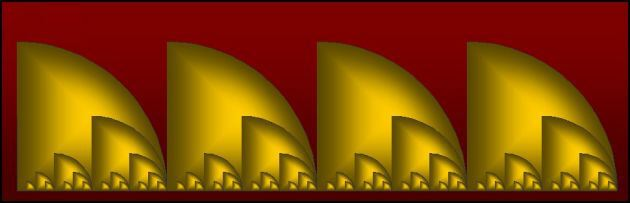

| Pulse | Instrument |
| Eighth note | Claves |
| Quarter note | High Wood Block |
| Half note | Tambourine |
| Whole note | Open Cuica |
| 8 beat | Tom-Tom/Bass Drum |
| 16 beat | Open Triangle |
|
|
| Generally speaking, lower frequency pulse trains dominate all coincident pulses belonging to higher
frequency pulse trains. |
| Consider, for example, the way the thump of a bass drum or slap of a bass guitar
can momentarily overshadow other voices. |
| The following graph helps illustrate this concept of dominance. |
| At any given time, only the largest pulse depth is represented. |

| If the smallest feature represents one sixteenth note (half of an eighth note), then the largest
feature corresponds to a whole note and the entire graph represents four measures of music in 4/4 time. |
Return to Pulse Trains.
© 2004 Harlan Brothers
|